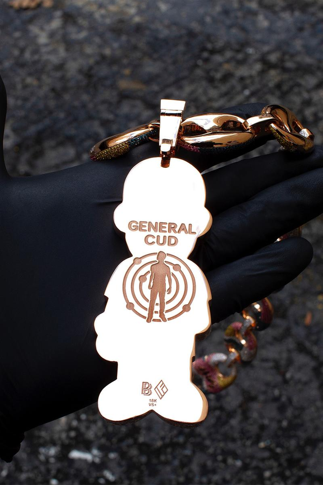

“I was in San Diego at a memorial, visiting my boy Q, who founded WorldStarHipHop, and I got a text. Cudi’s manager hit me up. Three or four text exchanges go back and forth, then Cudi calls me. I was inside this Japanese bargain store, killing time. I was like, ‘Cudi, what’s good?’ He goes, ‘I got this idea. My birthday’s coming up. How fast can you make a chain?’ I was like, ‘What made you hit me up?’ He was like, ‘You know what? I’ve never had a custom chain before.’ I was like, ‘What? You had a Jacob [the Jeweler] Jesus piece.’ He was like, ‘Yeah, ’Ye gave me that. I started going back and forth with Pharrell, and Pharrell was like, ‘You gotta fuck with Ben Baller.’’
“So we started bouncing ideas off of each other. He was texting me pictures and sent me a drawing that Murakami did of him, ’cause Murakami did Kids See Ghosts. I looked at it and was like, ‘This is cool, but this ain’t gonna translate into jewelry.’ He sends me another picture, an old picture of a Bape Milo character [of him] that NIGO® designed from 2009-2010. He was like, ‘You know I used to work at the Bape [SoHo] store?’ I thought he was joking. I looked at the picture and was like, ‘This is it. I’m gonna put white diamonds here, blue sapphires here…’ I was breaking down everything, and then he goes, ‘Yo, I need you to do me a favor. I need you to change the eyeballs. I don’t want black eyeballs. I want two red ruby eyeballs, and I want the entire thing to be one stone.’ I was like, ‘You sure?’ He goes, ‘Yeah, I’m the stoner. I’m the kid rager.’
“Later, I asked what he wanted on the back of [the chain]. He was like, ‘I want that shit to say General Cud, and I want my Cudi logo.’ We get this going and I’m like, ‘Bro, where are we meeting?’ He was like, ‘I’m at the studio. You need to pull up right now.’ I get to the studio and this dude’s smiling ear to ear. I pull out the chain and everyone in the room was like, ‘Holy shit.’ Cudi’s bugging out and goes, ‘I gotta leave the room. I gotta FaceTime my daughter and show her this chain.’ He was in there for, like, 15 to 20 minutes. I think he called me twice after I left the studio. I think the motherfucker slept with the chain on.”